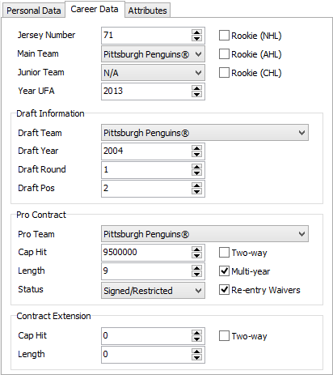

This page contains fields related to player's hockey career:

Player Career Data
The fields pictured in the screenshot above are for NHL 14. The previous versions of the game do not have the same fields.
Jersey Number - Player's favorite number. This number will be used when player is placed in Free Agents. Changing this value does not affect the jersey number of the selected player instance on his team. To change the number on the team, use the Line Editor.
Main Team - A player may be present on several teams. Main Team determines the team that is considered the player's principal team. Normally NHLView NG automatically updates this value when player is moved from team to team, but in case the value is incorrect, you have the possibility of changing in manually.
Junior Team - The last junior team of the player. NHLView NG will automatically update this value when a player is traded within junior leagues.
Year UFA - The year player becomes an unrestricted free agent. Normally this happens at 27 years old, but it can happen earlier if player completed 7 professional seasons before that age. NHLView NG does not update this value automatically, so if you change the birth date of the player also adjust this value.
Rookie Statuses - The rookie checkboxes determine whether the player is considered a rookie in a particular league (NHL, AHL, Junior Leagues)
Draft Information - When and by whom the player was drafted. If player is undrafted, put 0s in all the fields. Note that the draft year exceeding the current year of the game might not be correctly understood by the game. Also, for undrafted players in junior leagues it's possible to specify only the draft year. In this case, it will signify the year of draft eligibility for the player in Be a GM mode.
Pro Team - NHL team owning the rights to the player. This will determine the depth chart of the team in Be a GM mode. Note that Pro Team should only be set when Contract Status is "Signed/Restricted". NHLView NG will automatically update this value when player is traded within NHL, but you may change the value manually.
Cap Hit/Length - NHL contract parameters. For drafted junior players without a contract, put 0s in these fields.
Status - If player is a restricted free agent, has been drafted by an NHL team or has an NHL contract this value should be "Signed/Restricted". If the player is an unrestricted free agent, this value should be "Unrestricted". The value of this field should be kept in sync with "Pro Team".
Contract Flags - Determines particularities of the contract (two-way, multi-year, etc.). It is unknown at this point how the game uses these values.
Contract Extension - Determines the next contract of the player in Be a GM mode. If extension is not present, specify 0s in all the fields.